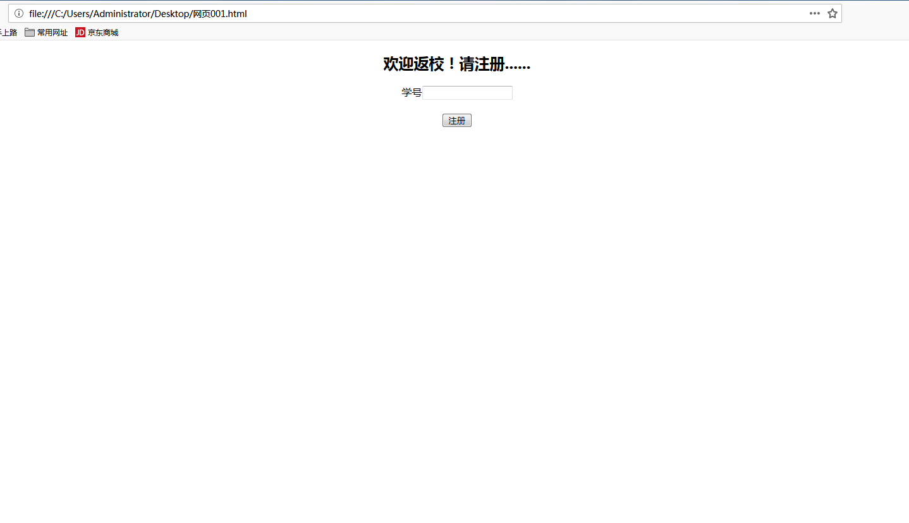
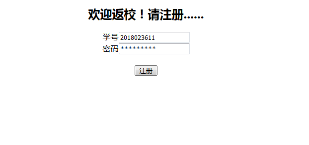
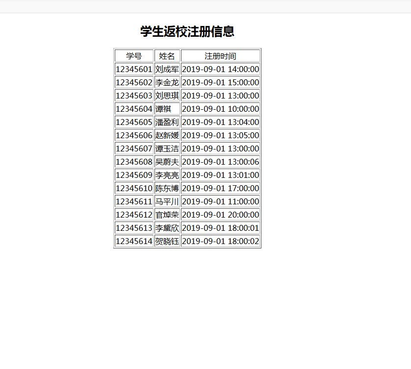
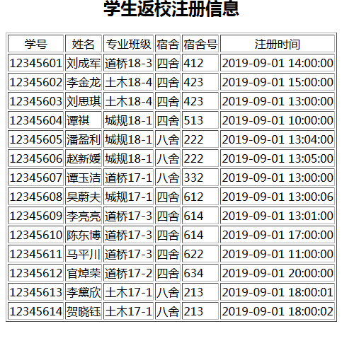

利用快速原型获取软件需求
在客户 开发商 用户 之间
旨在启发客户 引导客户真正知道和了解自己的可行需求
快速搭建原型 高效准确地确定用户需求
我们可能要用到一个软件需求方面的知识-快速原型
例子
以CSS语言为例从一个最最最简单的教务系统入手
代码如下：
<html>
<center>
<h2>欢迎返校！请注册......</h2>
学号<input>
<br>
<br>
<input type=button value="注册">
</center>
</html>
大概是下图这样的界面 看到这么简陋的页面，需求方肯定会提要求，比如：有学号没密码容易让同学替签到之类的问题

这种需求当然很合理，所以我们可以在适当的位置添加几行
<br>
密码<input>
酱紫就可以有密码啦
注册原型的启发，需求方很可能会产生更多需求，比如注册完的学生返校注册信息

<html>
<center>
<h2>学生返校注册信息</h2>
<table border=1>
<tr align=center><td>学号<td>姓名<td>注册时间</tr>
<tr><td>12345601<td>刘成军<td>2019-09-01 14:00:00</tr>
<tr><td>12345602<td>李金龙<td>2019-09-01 15:00:00</tr>
<tr><td>12345603<td>刘思琪<td>2019-09-01 13:00:00</tr>
<tr><td>12345604<td>谭祺<td>2019-09-01 10:00:00</tr>
<tr><td>12345605<td>潘盈利<td>2019-09-01 13:04:00</tr>
<tr><td>12345606<td>赵新媛<td>2019-09-01 13:05:00</tr>
<tr><td>12345607<td>谭玉洁<td>2019-09-01 13:00:00</tr>
<tr><td>12345608<td>吴蔚夫<td>2019-09-01 13:00:06</tr>
<tr><td>12345609<td>李亮亮<td>2019-09-01 13:01:00</tr>
<tr><td>12345610<td>陈东博<td>2019-09-01 17:00:00</tr>
<tr><td>12345611<td>马平川<td>2019-09-01 11:00:00</tr>
<tr><td>12345612<td>官焯荣<td>2019-09-01 20:00:00</tr>
<tr><td>12345613<td>李黛欣<td>2019-09-01 18:00:01</tr>
<tr><td>12345614<td>贺晓钰<td>2019-09-01 18:00:02</tr>
很自然的，需求方对这块业务的需求随着我们的引导自然会调动启发出新的要求
那些需求只要合理合乎我们的技术能力范围我们也可以现场修改这个快速原型
比如：辅导员需要知道学生的宿舍加寝室号以及所在班级等信息
<html>
<center>
<h2>学生返校注册信息</h2>
<table border=1>
<tr align=center><td>学号<td>姓名<td>专业班级<td>宿舍<td>宿舍号<td>注册时间</tr>
<tr><td>12345601<td>刘成军<td>道桥18-3<td>四舍<td>412<td>2019-09-01 14:00:00</tr>
<tr><td>12345602<td>李金龙<td>土木18-4<td>四舍<td>423<td>2019-09-01 15:00:00</tr>
<tr><td>12345603<td>刘思琪<td>土木18-4<td>四舍<td>423<td>2019-09-01 13:00:00</tr>
<tr><td>12345604<td>谭祺<td>城规18-1<td>四舍<td>513<td>2019-09-01 10:00:00</tr>
<tr><td>12345605<td>潘盈利<td>城规18-1<td>八舍<td>222<td>2019-09-01 13:04:00</tr>
<tr><td>12345606<td>赵新媛<td>城规18-1<td>八舍<td>222<td>2019-09-01 13:05:00</tr>
<tr><td>12345607<td>谭玉洁<td>道桥17-1<td>八舍<td>332<td>2019-09-01 13:00:00</tr>
<tr><td>12345608<td>吴蔚夫<td>城规17-1<td>四舍<td>612<td>2019-09-01 13:00:06</tr>
<tr><td>12345609<td>李亮亮<td>道桥17-3<td>四舍<td>614<td>2019-09-01 13:01:00</tr>
<tr><td>12345610<td>陈东博<td>道桥17-3<td>四舍<td>614<td>2019-09-01 17:00:00</tr>
<tr><td>12345611<td>马平川<td>道桥17-3<td>四舍<td>622<td>2019-09-01 11:00:00</tr>
<tr><td>12345612<td>官焯荣<td>道桥17-2<td>四舍<td>634<td>2019-09-01 20:00:00</tr>
<tr><td>12345613<td>李黛欣<td>土木17-1<td>八舍<td>213<td>2019-09-01 18:00:01</tr>
<tr><td>12345614<td>贺晓钰<td>土木17-1<td>八舍<td>213<td>2019-09-01 18:00:02</tr>
效果如下

这样信息就准确多了，至此，客户应该对自己的需求有了更多的认识。
而且再我们的引导调动下，这些需求都会越来越可行，而且越来越完善。
明确了功能所涉及的数据和信息。
通过这个章节的学习，我了解到了快速原型确实能快速地、高效地、准确地、全面地确定目标软件系统的需求。
所以快速原型是一种非常好的，进行软件需求的调研和确认的方法。